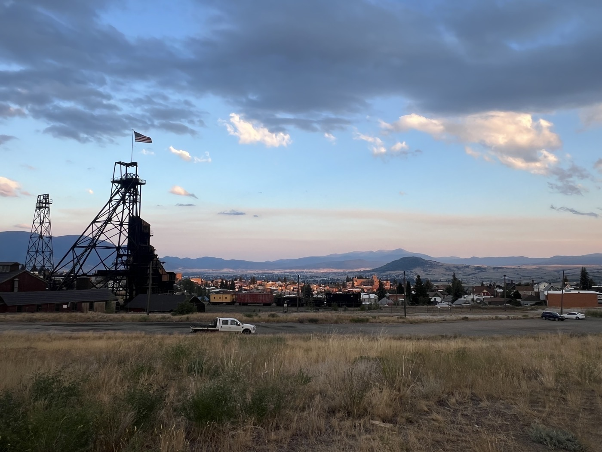

Lava Mountain and Butte

Je quitte mon lac dans le brouillard pour m'attaquer à Lava Mountain. Passage difficile, je m'arrête à Basin pour reprendre des forces. Je poursuis sur Butte où j'arrive avec la tombée de la nuit. Je prends une chambre - besoin d'un bain et d'une grosse nuit!